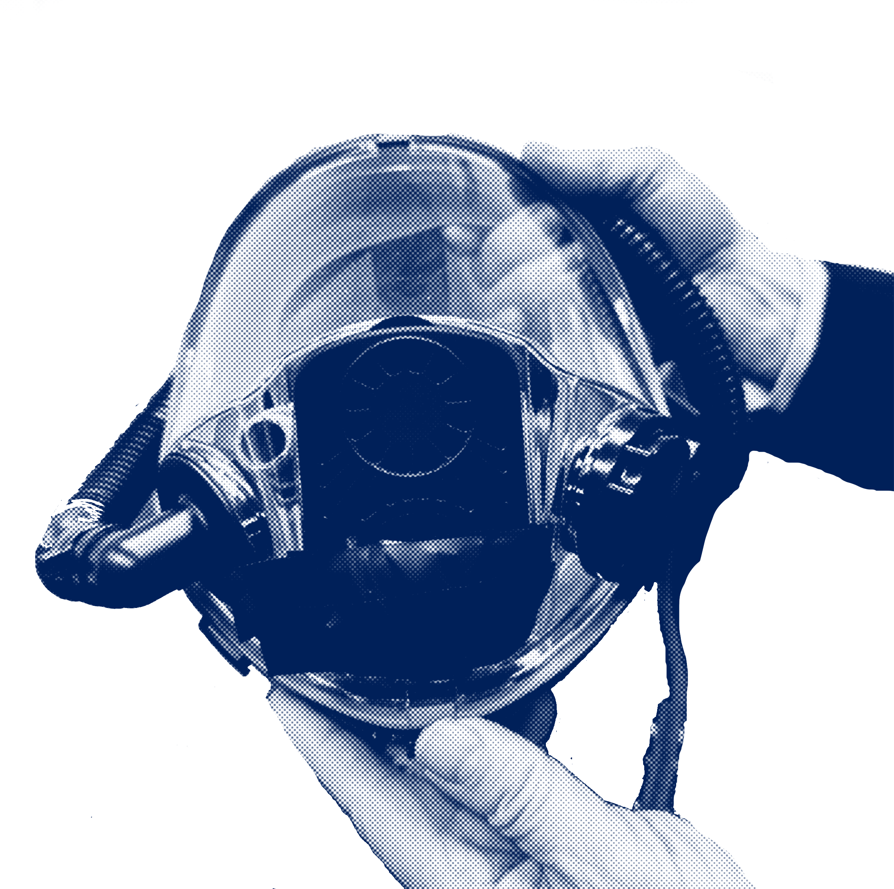

Back
Back“Η πολιτεία της Αλαμπάμα χρησιμοποίησε την εισπνοή αζώτου (υποξία αζώτου)
για την εκτέλεση του Κένεθ Σμιθ στις 25 Ιανουαρίου 2024.
Το άζωτο θεωρείται πολύ απάνθρωπο για την ευθανασία ποντικών
ή σκύλων, αλλά ορισμένοι παραπληροφορημένοι πολιτικοί, γενικοί εισαγγελείς
και άπειροι επαγγελματίες υγείας υποστηρίζουν τη χρήση αυτής της σκληρής
μεθόδου για τη θανατική ποινή στις Η.Π.A.”*
*Michael S. Lipnick, Philip E. Bickler, Evidence Against Use
of Nitrogen for the Death Penalty, 2024

.....